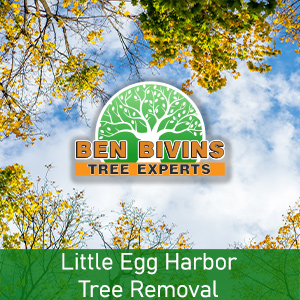
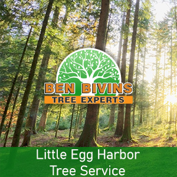

If you are searching for tree service in Little Egg Harbor or tree removal in Little Egg Harbor, Ben Bivins Tree Experts has you covered. Our family-owned business has been providing quality tree service to the Little Egg Harbor community for years.
All About Little Egg Harbor Tree Removal

Do you have a dead or unsightly tree that should be removed? Tree removal is a hazardous process that will require the right equipment and basic safety practices. Though it may be tempting to remove a tree on your own from your Little Egg Harbor residence, it may be a choice that puts yourself or other people in jeopardy, without having the proper training. There can be numerous factors why you are searching for a tree removal in Little Egg Harbor:- Tree is obstructing too much sunshine on your property
- Tree is deceased or unhealthy as well as a probable safety hazard
- Tree is overgrown and presents a threat if significant branches fall
- Tree was harmed in a weather event and is beyond the point of preserving
- You are thinking about renovations which will inevitably damage the trees
- Tree is losing a great number of branches, leaves, or pine needles
We are a fully insured and qualified tree company. Please don’t take the risk of hiring an uninsured tree removal company or depending upon a friend or family member to perform this sort of job. Our team is skillfully educated and our business holds the appropriate qualifications to ensure your Little Egg Harbor tree removal will be conducted in the safest and most efficient way possible. Tree removal requires the utilization of heavy machinery and dangerous equipment that should only be left to the professionals. Leave it to Ben Bivins Tree Experts! Contact us for an estimate for your Little Egg Harbor tree removal.
Seeking Tree Service in Little Egg Harbor NJ?

We perform all facets of Little Egg Harbor tree service. Some of these solutions include:- Tree Trimming – Are trees on your property overgrown? Is your lawn lacking sunlight caused by an overgrown tree? Trimming a tree’s branches may make a big difference and may allow you to maintain a tree you otherwise considered getting rid of.
- Pruning – Keep your trees happy and healthy. Pruning involves assessing a tree’s overall health and making a decision to eliminate limbs selectively to optimize its health and sustainability.
- Crown Reduction – We are able to reduce the size of your tree’s canopy with this method. Our crew will assess your trees and make suggestions to take out certain limbs which will scale back canopy coverage.
- Emergency Tree Service – Have you got a fallen tree that requires immediate attention? Is there a tree that’s close to causing damage if not dealt with right away? You may be a prospect for emergency tree service.
If you’re a Little Egg Harbor resident requiring tree service, Give us a call. Scheduling varies according to weather, season and our current jobs in progress. Our representative will give you an estimate and inform you of date ranges available for service after assessing your specific job.
Your Provider for Little Egg Harbor Firewood
It’s no real surprise that a Little Egg Harbor tree removal company might have an excess supply of firewood! If you are seeking firewood for a wood burning stove or fireplace, give us a call. Firewood availability varies all through the year.